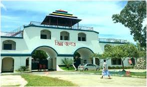
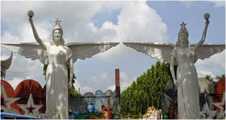

বেসরকারিভাবে প্রায় ১শ’ একর জমির উপর গড়ে ওঠা এই বিনোদন কেন্দ্রটি সারাক্ষণ নানা জাতের পাখির কোলাহলে মুখরিত থাকে। এর গাছে গাছে দেখা যায় নানান প্রজাতির পাখি।
সন্ধ্যা হলেই তারা তাদের নীড়ে ফিরে আসে। ভিন্নজগতে শোভা পাচ্ছে দেশি-বিদেশি হাজারও বৃক্ষ। এখানে দর্শনার্থীরা গাছের ছায়ায় সারাটা দিন ঘুরে বেড়াতে পারেন।
ভিন্নজগতের প্রধান ফটক পার হলেই তিন দিকের বিশাল লেক ঘেরা নয়নাভিরাম দৃশ্য দেখা শেষ হলেই সামনে পড়বে লোহার ১টি ব্রিজ। ব্রিজটি পার হলেই ভিন্নজগতের ভেতর যেন আরেকটি ভিন্নজগত।
এখানে রয়েছে আধুনিক বিশ্বের বিস্ময় এবং দেশের প্রথম পনেটোরিয়াম। রয়েছে রোবট স্ক্রিল জোন, স্পেস জার্নি, জল তরঙ্গ, সি প্যারাডাইস, আজব গুহা, নৌকা ভ্রমণ, শাপলা চত্বর, বীরশ্রেষ্ঠ এবং ভাষা সৈনিকদের ভাস্কর্য, ওয়াক ওয়ে, থ্রিডি মুভি, ফ্লাই হেলিকপ্টার, মেরি গো রাউন্ড, লেক ড্রাইভ, সুইমিং পুল স্পিনিং হেড, মাছ ধরার ব্যবস্থা।
একই সঙ্গে রয়েছে অন্তত ৫শ’টি পৃথক দলের পিকনিক করার ব্যবস্থা। শুধু ভেতরেই রয়েছে অন্তত ১০০০ গাড়ি পার্কিংয়ের সুবিধা। কটেজ রয়েছে ৭টি। রয়েছে থ্রি স্টার মডেলের ড্রিম প্যালেস।এখানকার জলাশয়ে রয়েছে নৌভ্রমণের সুবিধা। শিশুদের জন্য রয়েছে ক্যাঙ্গারু, হাতি, ঘোড়াসহ নানা জীবজন্তুর মূর্তি।
ভিন্নজগতের জলাশয়ের চারিধার জুড়ে রয়েছে পরিকল্পিতভাবে রোপিত নানা জাতের শোভা বর্ধনকারী গাছ।গাছে গাছে দেখা যায় নানান প্রজাতির পাখি। সন্ধ্যা হলেই তারা তাদের নীড়ে ফিরে আসে।
ভিন্নজগতে শোভা পাচ্ছে দেশি-বিদেশি হাজারও বৃক্ষদেশের বিভিন্ন এলাকা থেকে প্রতিদিন,বাস, মাইক্রো বাস, মোটরসাইকেল, রিকশা, অটোরিকশাসহ বিভিন্ন যানবাহনে করে প্রচুর মানুষ বেড়াতে আসেন এখানে।
ভিন্নজগতের প্রবেশ মূল্য ২০ টাকা। এছাড়া ভেতরের প্রতিটি রাইডের জন্য আলাদা করে ১০ থেকে ৩০ টাকা পর্যন্ত দিতে হয়। কীভাবে যাবেন ভিন্নজগত দেশের যে কোন প্রান্ত থেকে রংপুরে আসবেন। রংপুর থেকে সরাসরি ভিন্নজগতে যাওয়ার জন্য গাড়ির ব্যবস্থা রয়েছে।

কিভাবে যাওয়া যায়:
ঢাকার মহাখালী, কল্যাণপুর, মোহাম্মদপুর এবং গাবতলী থেকে রংপুরগামী বেশ কয়েকটি বিলাস বহুল এসি ও নন এসি বাস রয়েছে। এসব বাসের ভাড়া ৫শ’ টাকা থেকে ১ হাজার টাকার মধ্যে।
এছাড়া কমলাপুর রেলস্টেশন থেকে রংপুর এক্সপ্রেস সোমবার ছাড়া প্রতিদিন সকাল ৯টায় রংপুরের উদ্দেশে ছেড়ে আসে। রংপুরে ট্রেন ভাড়া ২শ’ থেকে ৭শ’ টাকা। ঢাকা থেকে রংপুর আসতে সময় লাগবে সাড়ে ৬ থেকে ৭ ঘণ্টা। ট্রেনে লাগবে ৮ থেকে ৯ ঘণ্টা।
রংপুর থেকে সরাসরি ভিন্নজগতে যাওয়ার জন্য গাড়ির ব্যবস্থা রয়েছে। এক্ষেত্রে প্রাইভেটকারের ভাড়া ৪শ’ থেকে ৫শ’ টাকা এবং মাইক্রোবাসের ভাড়া ৮শ’ থেকে ১ হাজার টাকা।
এছাড়া সৈয়দপুর দিনাজপুরের গাড়িতে চড়েও ভিন্নজগতে যাওয়া যায়। সেক্ষেত্রে নামতে হবে রংপুরের পাগলাপীর বাসস্ট্যান্ডে। এছাড়া রংপুর থেকে জলঢাকাগামী গাড়িতে ভিন্নজগতে যেতে পারবেন। সেখান থেকে ১শ’ থেকে দেড়শ’ টাকায় ব্যাটারি চালিত ইজিবাইকে করে ১৫ থেকে ২০ মিনিটের মধ্যে যাওয়া যায় ভিন্নজগতে।
নিরাপত্তা ব্যবস্থা:
ভিন্নজগতে রয়েছে নিজস্ব নিরাপত্তা ব্যবস্থা। এখানে দর্শনার্থীদের নিরাপত্তায় বেশকিছু কর্মকর্তা-কর্মচারী নিয়োজিত আছেন।
প্রবেশ মূল্য:
ভিন্নজগতের প্রবেশ মূল্য ২০ টাকা। এছাড়া ভেতরের প্রতিটি রাইডের জন্য আলাদা করে ৫ থেকে ৩০ টাকা পর্যন্ত দিতে হয়।